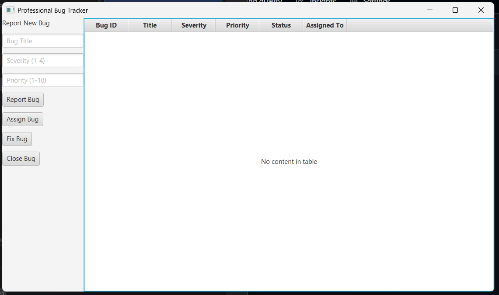
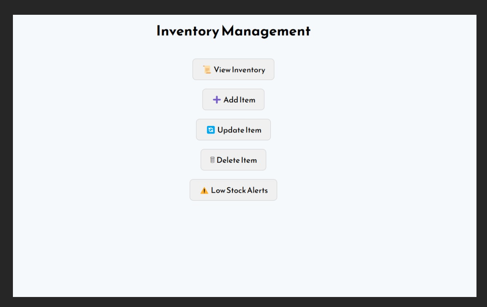
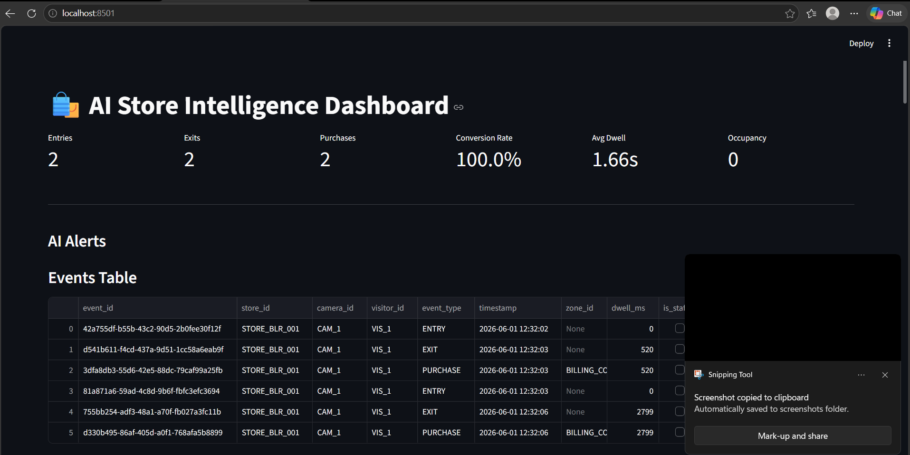
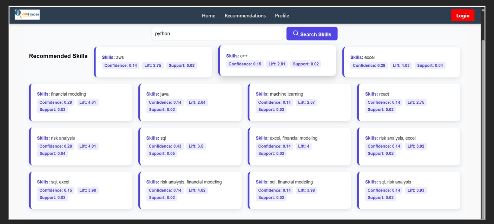

Building software solutions, data-driven applications, and intelligent systems.
Information Technology Student at MKSSS Cummins College of Engineering for Women, Pune.
Passionate about Software Development, Data Science, Machine Learning, Artificial Intelligence and Full-Stack Web Development.
🟢 Open to Software Development, Data Science and Web Development Internships
I am a third-year B.Tech Information Technology student at MKSSS Cummins College of Engineering for Women, Pune, with a strong interest in Software Development, Data Science, Machine Learning, and Full-Stack Web Development. My experience includes developing Java desktop applications, full-stack web applications, recommendation systems, inventory management systems, and analytics solutions. Through these projects, I have gained hands-on experience with Java, Python, React.js, MySQL, Machine Learning, Data Structures, DBMS, and Git. I enjoy solving real-world problems through technology and continuously learning new tools and frameworks.
CGPA
MHT-CET Percentile
Projects

Developed a JavaFX desktop application integrated with MySQL to manage software bugs through reporting, assignment, prioritization, fixing, and closure workflows. Implemented data structures such as Priority Queue, HashMap, Queue, and Stack for efficient bug lifecycle management.
Tech: Java, JavaFX, JDBC, MySQL, Data Structures
View on GitHub
Developed a DBMS-based full stack web application for cloud kitchens to automate inventory tracking, vendor management, purchase handling, recipe management, and order processing. Designed normalized MySQL database tables with CRUD operations, authentication, and low-stock monitoring.
Tech: React.js, Node.js, Express.js, MySQL, DBMS
View on GitHub
Developed a business analytics platform to monitor sales, inventory trends, customer behavior, and business performance. Created dashboards and reports to support data-driven decision making.
Tech: Python, Power BI, Data Analytics
View on GitHubDeveloped a machine learning-based recommendation platform that analyzes OTT platform trends using Linear Regression and ARIMA forecasting. Built personalized recommendations based on user mood, preferred genres, ratings, and watch-time behavior.
Tech: Python, Flask, Pandas, Scikit-learn, ARIMA, Matplotlib
View on GitHub
Developed an AI-powered job recommendation platform using Association Rule Mining and the Apriori Algorithm to provide personalized job suggestions based on user skills and interests.
Tech: Python, Pandas, Machine Learning, MLxtend
Issued: December 30, 2025 | Valid till: December 30, 2026
📌 Currently open to Internship opportunities. Feel free to reach out!
Email: sejalbarapatre17@gmail.com
LinkedIn: linkedin.com/in/sejal-barapatre
GitHub: github.com/SejalB05
📍 Pune, Maharashtra, India